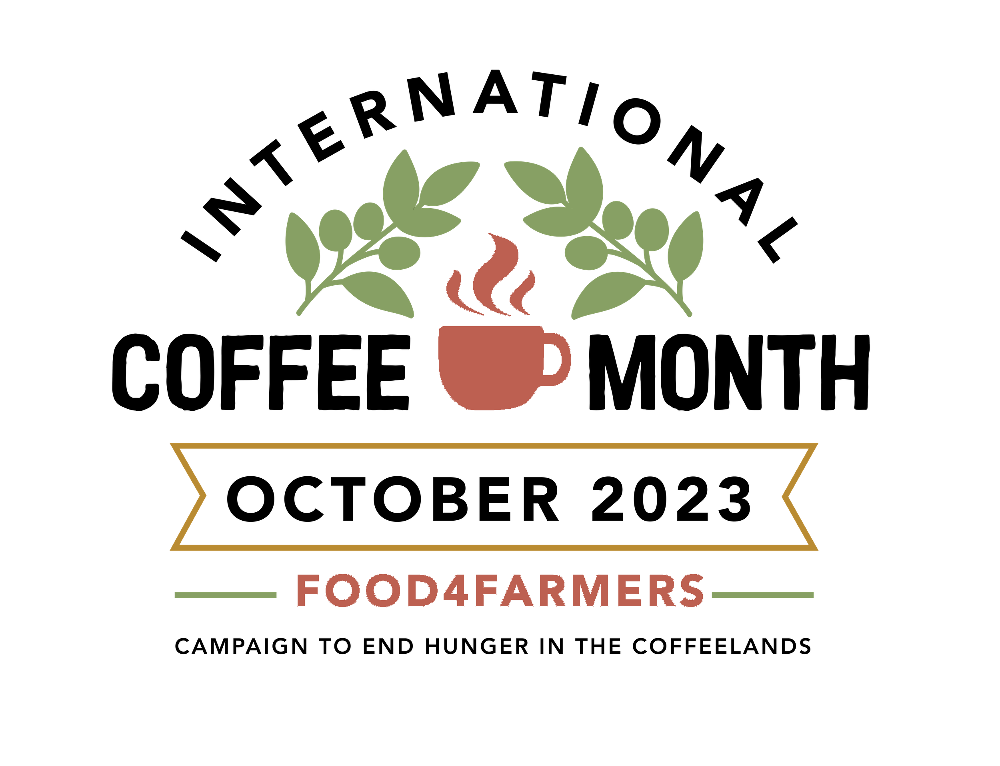
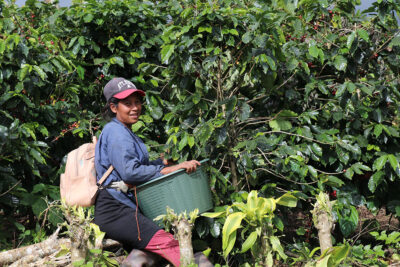
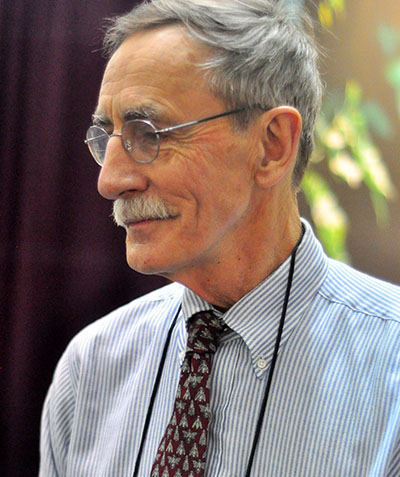
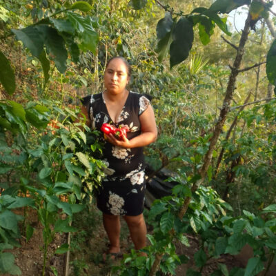
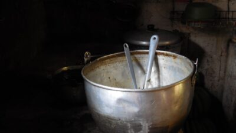

- OUR WORK
- THE CHALLENGES
- OUR IMPACT



Mission
We partner with coffee-farming communities in Latin America to cultivate a food-
secure future. Our co-op partners and the thousands of coffee-farming families
they represent are working to put good, healthy food on their tables every day.
Our Impact
We help coffee-growing communities strengthen local food systems, promote sustainable farming practices, diversify family livelihoods, and cultivate local leadership.


Help coffee-farming families and their communities access locally grown nutritious food, every day.
Blog

Who Is Today's
Who Is Today's
Coffee Farmer?

Thank You Bill,
Thank You Bill,
Mares!

Creating
Creating
opportunity.
Empowering
Women.

Fighting the Thin
Fighting the Thin
Months in Coffee
Farming
Communities
“It’s a great advantage to grow vegetables without
pesticides so we don’t jeopardize the health of our
children.”
~ Rosibel Gonzalez, coffee farmer
Rosibel is a participant in our organic farmers market program with Nicaraguan coffee cooperative
SOPPEXCCA.
70 S Winooski Ave
Ste 1W #312
Burlington, VT 05401 USA
Phone (802) 497-3304
Tax ID: 27-2267267